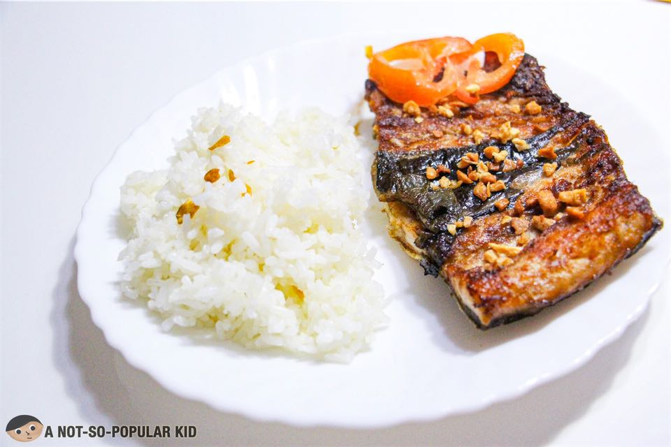
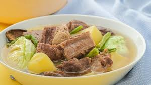

| MEAL PLANNER | |||||||
|---|---|---|---|---|---|---|---|
| DAYS | BREAKFAST | LUNCH | DINNER | ||||
| MONDAY | |
Garlic rice with fried eggs with fruit juice | |
White rice with Sinigang | White rice with fried chicken | ||
| TUESDAY | Hot Taho |  | White rice with Piniritong Bangus and gulay | White rice with Pinakbet | |||
| WEDNESDAY | |
Pandesal with Milo | White rice with Pininyahang Manok | White rice with Liempo | |||
| THURSDAY | White rice with Tortang Talong | |
White rice with Tinola | |
White rice with Lechon Kawali | ||
| FRIDAY | White rice with Dilis | White rice with Chopsuey |  | White rice with Nilaga | |||
-Christie. (2023). Egg Fried Rice. Christie at Home. Retrieved October 6, 2023, from https://christieathome.com/blog/egg-fried-rice/.
-Mendoza, M. (2019). Sinigang na Baboy. whats4eats. Retrieved October 6, 2023, from https://www.whats4eats.com/soups/sinigang-na-baboy-recipe.
-Estrada, A. (n.d.). Pancake House-Style Fried Chicken and Gravy. Pepper.ph. Retrieved October 6, 2023, from https://pepper.ph/recipes/pancake-house-style-fried-chicken-and-gravy.
-Wikipedia. (2023). A Cup of Taho. Taho. Retrieved October 6, 2023, from https://en.wikipedia.org/wiki/Taho.
-Cheng, R. (2019). Sarangani Bay Prime Bangus - a household must-buy! A Not-So-Popular Kid. Retrieved October 6, 2023, from https://www.anotsopopularkid.com/2019/07/sarangani-bay-prime-bangus-milkfish.html.
-Santos, R. (2017). Pakbet Fried Rice. Pakbet Fried Rice With Lechon Kawali Recipe. Yummy.ph. Retrieved October 6, 2023, from https://www.yummy.ph/recipe/pakbet-fried-rice-with-lechon-kawali-recipe.
-TheSkinnyPot. (n.d.). Best Pandesal . Best Pandesal You can make with Recipe plus step by step video. Retrieved October 6, 2023, from https://www.pinterest.ph/pin/238550111496282198/.
-Manalo, L. (2019). Pininyahang Manok. Kawaling Pinoy. Retrieved October 6, 2023, from https://www.kawalingpinoy.com/pininyahang-manok/.
-Yummy.ph. (2016). Pork Liempo. How To Cook Liempo. Retrieved October 6, 2023, from https://www.yummy.ph/lessons/cooking/how-to-cook-liempo-video-a30-20160929.
-Bianca. (2021). Tortang Talong. Eggplant Omelette (Tortang Talong). Bites by Bianca. Retrieved October 6, 2023, from https://bitesbybianca.com/eggplant-omelette-tortang-talong/.
-Ajinomoto. (n.d.). Chicken Breast Tinola. Retrieved October 6, 2023, from https://www.cookmunitybyajinomoto.com/recipes/chicken-breast-tinola/.
-Wikipedia. (2023). Lechon Kawali. Retrieved October 6, 2023, from https://en.wikipedia.org/wiki/Lechon_kawali.
-Yummy.ph. (2019). Spicy Dilis. This Spicy Dilis Recipe Is The Only Snack You Will Need. Retrieved October 6, 2023, from https://www.yummy.ph/lessons/cooking/how-to-make-spicy-dilis-recipe-video-a00211-20190116.
-Tripadvisor. (n.d.). Seafood Chopsuey. Seafood Chop Suey. Retrieved October 6, 2023, from https://www.tripadvisor.fr/LocationPhotoDirectLink-g32471-d837878-i272905936-Rice_Bowl-Hanford_California.html.
-Miranda, R. (2019). Beef Nilaga. Beefy Mushroom Nilaga Recipe. Yummy.ph. Retrieved October 6, 2023, from https://www.yummy.ph/recipe/beef-mushroom-nilaga-recipe-a439-20191011.